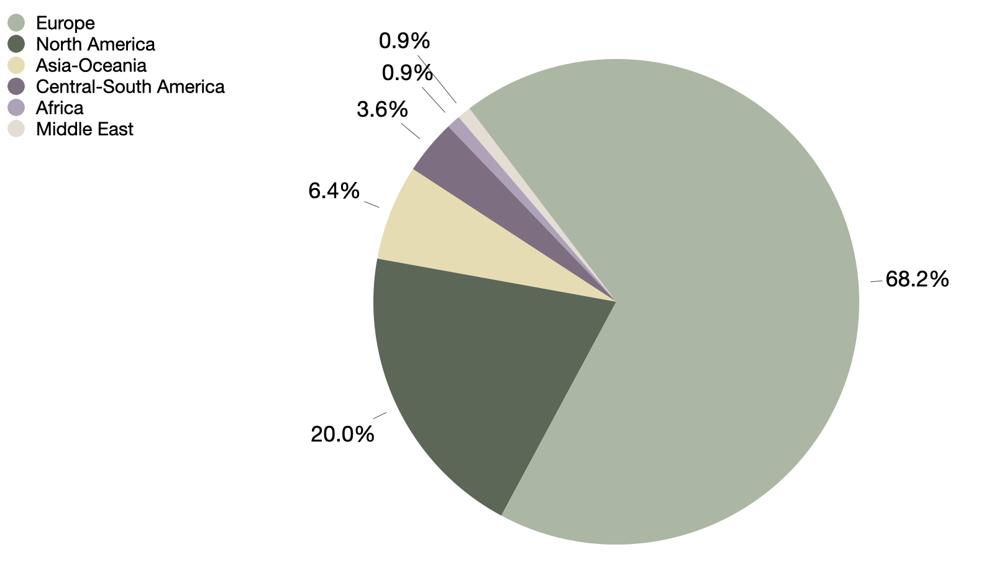
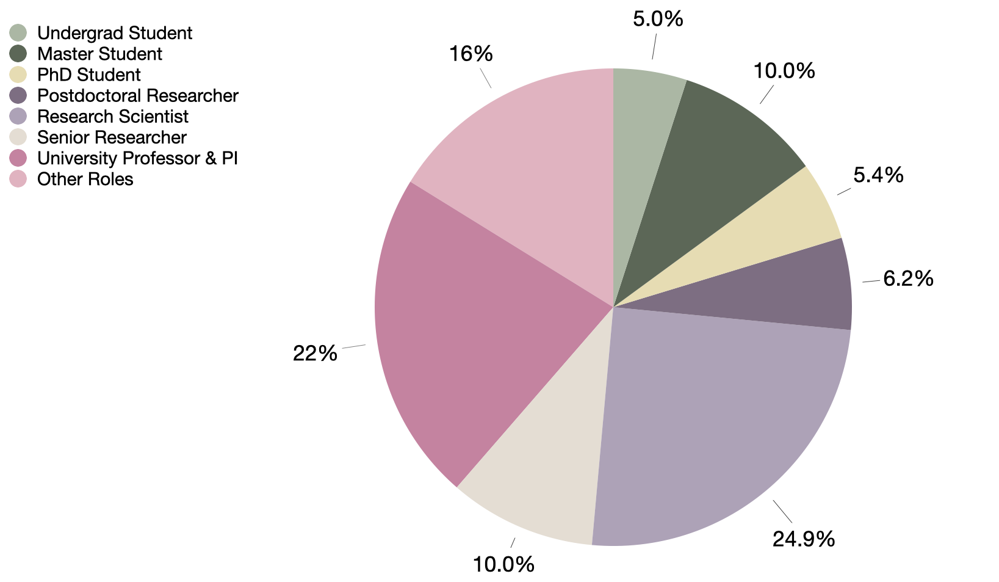

We here present complementary insights from the Music Information Retrival (MIR) community survey, focusing on participants characterisitcs.
This survey is linked to the research article “MusGO: A Community-Driven Framework for Assessing Openness in Music-Generative AI”, authored by Roser Batlle-Roca, Laura Ibáñez-Martínez, Xavier Serra,
Emilia Gómez, and Martín Rocamora.
The survey was conducted to gather insights from the MIR community on a proposed preliminary adapted framework and its categories.
Based on participants' feedback, we refined the framework to better align with the specific nuance of the music domain.
This included clarifying category descriptions, addressing disagreements, and incorporating music-specific concerns such as IP-protected training data, the importance of sonified examples, and the usability requirements of musicians.
Read the paper
| GitHub Repository
| Openness Leaderdboard
| Detailed Criteria
| How to contribute?
| Help us improve!
Methodology
The survey included a statement for each category reflecting the top open level
(fully open) of the adapted framewrok from Liesenfeld and Dingemanse (2024). The preliminary criteria assessed in the survey is available here.
Participants were asked to assess the proposed statement by:
- Relevance — how important they consider the category in determining the openness of a model, rated on a 5-level scale where 1 is not relevant and 5 is very relevant.
- Agreement — whether they agreed, somewhat agreed, or did not agree with the proposed statement.
They were encouraged to suggest modifications and refinements of the statements when they disagreed or had reservations about the criteria.
The survey was open for 8 weeks (from November 5th to December 31st, 2024) and received 110 valid responses from a diverse range of participants in the MIR community.
We disseminated the survey through multiple communication channels, including MIR-related mailing lists and Slack, and
we also shared it on social media platforms such as LinkedIn, BlueSky and X.
Participants
In our community-targeted survey, participants ranged from 21 to 70 years old, with an average of 35 and a median of 33.
In terms of gender distribution, 78 participants (70.91%) identified as male, 25 (22.73%) as female, 4 (3.64%) as non-binary, and 3 (2.73%) preferred not to disclose their gender.
Regarding their affiliations, the largest group of participants (74) were affiliated with academia (67.27%), followed by 30 (27.27%) participants from the industry.
A smaller proportion represented independent researchers (3.64%), government or regulatory bodies (0.91%), and non-profit organizations (0.91%).
Figure 1 illustrates the geographical distribution of participants, with a notable concentration in Europe (68.2%) and North America (20%).
Following, Figure 2 highlights the diver represenetation of roles within the MIR community.

Figure 1: Distribution of participants by geographical location.

Figure 2: Distribution of participants by roles within the MIR community.
Although we intended for a more inclusive representation, the obtained sample is biased towards males in academia based in Europe and North America.
However, this distribution aligns with the common demographic patterns of attendees to the annual conference of the ISMIR society, suggesting it is representative of the MIR community.